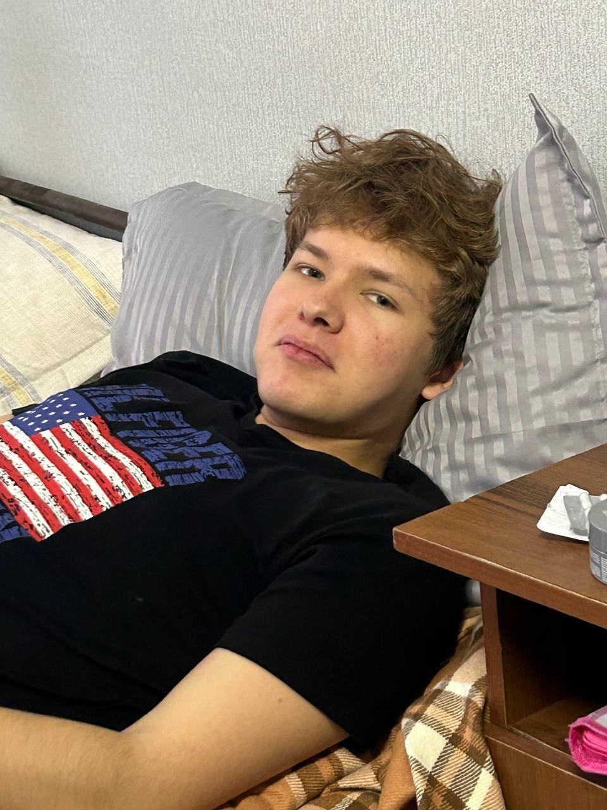

ВЫБОР ЯРОСЛАВА
01
THE MAIN CHARACTER
Комплект «Я тут керри»
Для тех, кто первым нажал «найти игру» и последним признал поражение.
Спросить Ярослава →
YAROSLAVloot with attitude Написать Ярославу ↗DOTA 2 FINDS · CURATED BY YAROSLAV
Ярослав находит вещи для тех, кто хочет выглядеть как финальный босс, даже если на линии опять «не повезло с командой».
Выглядит как будто знает тайминг.
Мы не проверяли.
НЕ ПРОСТО ИНВЕНТАРЬ
Ярослав верит в хорошие находки, красивый инвентарь и то, что следующая катка точно будет другой. В лавке — идеи для игроков Dota 2, а не обещания поднять тебе ранг.
«Я не говорю, что этот предмет принесёт победу. Ярослав вообще старается не обещать то, что не может выполнить».
— здравый смысл, редкий гость в пабеTHE CURRENT DROP
Концепты для твоего следующего красивого пика. Спросить наличие — у Ярослава; спросить его MMR — не надо.
THE MAIN CHARACTER
Для тех, кто первым нажал «найти игру» и последним признал поражение.
Спросить Ярослава →AFTER THE DRAFT
План А не сработал. План Б хотя бы выглядит дорого.
Спросить Ярослава →EMOTIONAL ARMOR
Сияет ярче, чем объяснение Ярослава после счёта 0:8.
Спросить Ярослава →✳ Это демонстрационная витрина: ассортимент, цены и наличие нужно подтвердить у владельца.
YAROSLAV'S POST-MATCH LAB
Протокол составлен Ярославом. Независимая экспертиза отказалась подключаться к этому лобби.
Драфт был настолько загадочным, что даже соперники не поняли, кто у вас керри. Ярослав понял последним.
Нажми кнопку — Ярослав выберет объяснение. Совпадение с реальной каткой не случайно.
NO RAGE QUIT CHECKOUT
Выбери находкуВитрина — идеи. Реальный ассортимент уточняй.
Свяжись с ЯрославомTelegram: @unknessl — наличие, цену и доставку уточни напрямую.
Сверь деталиЦена, наличие и доставка — напрямую, без магии.
YOUR INVENTORY CALLED
Ярослав уже готов. Ну, почти. Он ещё выбирает, какой предмет лучше сочетается с его статистикой.
Обсудить находку ↗